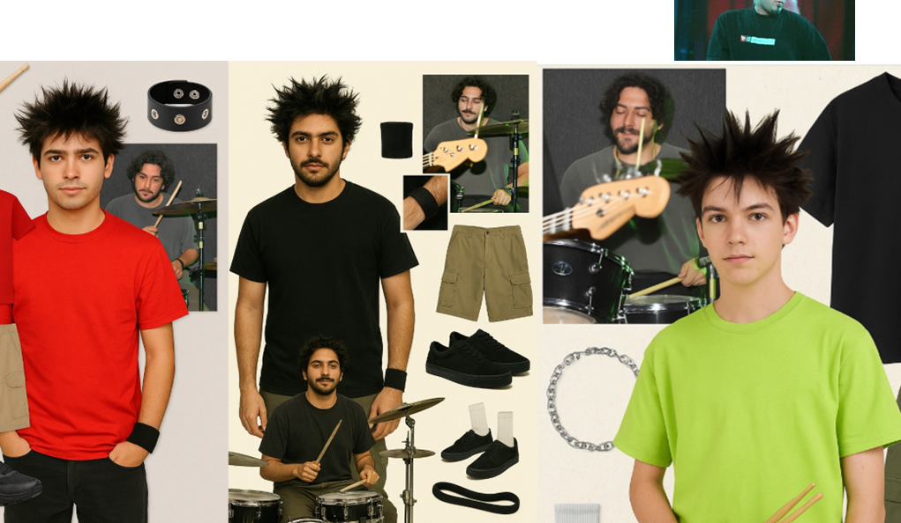
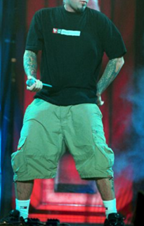
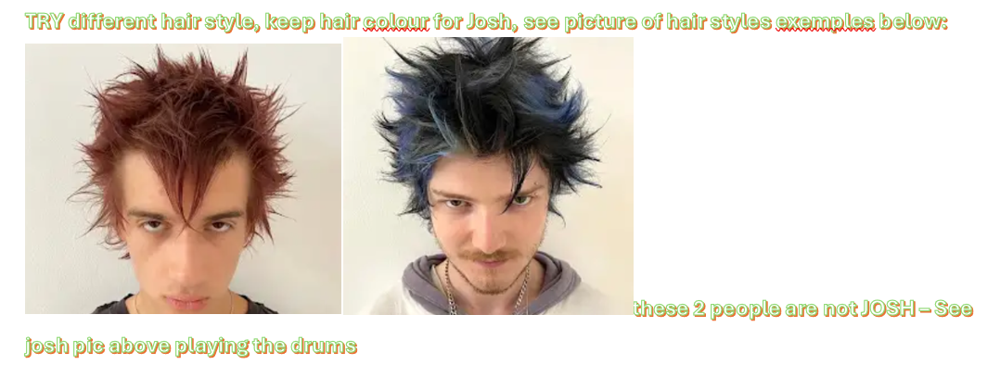

Josh
moodboardKeep hair color; try alt cuts. Tattooed mic/drums performance shots.
ref
ref

ref
style
Grunge 2000s × Y2k. One-page scroll. All images included locally.
Yungblud-inspired Y2K alt: graphic baby tees, pink skirt + guitar, messy energy.
Lolita velvet bows, plaid mini, fishnets; playful/edgy contrasts.
Keep hair color; try alt cuts. Tattooed mic/drums performance shots.
Two lanes: (1) sharp suit/tie; (2) 2000s Limp Bizkit/skater attitude.
Gwen Stefani × P!nk: raw, rebellious Y2K grunge; chain/metal bikini, baggy jeans, neon pops.